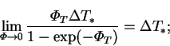

Under the approximation defined above, the system (2.52)-(2.55) becomes
to order O(1)
Equation (6.21) is not quite the same as the one
recommended in elementary mass transfer textbooks (e.g. Incropera & DeWitt
1990, p. 348).
The right hand side is the same, and is also formally
identical to the usual expression for the Nusselt number in single fluid
heat transfer problems (Incropera & DeWitt 1990, p. 347;
§2.4),
but the left hand side uses for the driving force not the mass fraction
difference,  , but the mass transfer rate factor,
, but the mass transfer rate factor,
 .
.
Similarly, the sensible Nusselt number retains its earlier definition
(2.64), which incorporates
the mass transfer rate correction factor. Note that
|  | (6.24) |
The key to the success of the results of §6.1.3 is that the definitions from chapter 2 of the Sherwood and Nusselt numbers are used for both general mass transfer rates (e.g. chapters 4 and 5) and low mass transfer rates.